Karnataka in South India unrivalled tourist destination in India. In Karnataka lies, a treasure of
history
and
heritage.
It is home to magnificent architecture, massive palaces still owned by royalty, holy revered
temples
and
UNESCO World heritage sites. There is a lot to be discovered when it comes to historical monuments in
Karnataka.
There are a lot of monuments that are to be visited in this beautiful state
Here are some of the must-visit historical monuments in Karnataka.
- Badami Cave Temples, Badami
- Bahamani Tombs
- Belgaum Fort
- Bidar Fort
- Chennakeshavasvami Temple (Kesava Temple), Hasan
- Choubara
- Gol Gumbaz
- Halebidu
- Hampi Group of Monuments
- Hassan
- Hospet
- Hoysaleswara Temple, Halibedu
- Kedareshwara Temple
- Mysore Palace, Mysore
- Srirangapatna
- Statue of Gomateshwara, Shravanabelagola
Badami Cave Temples, Badami
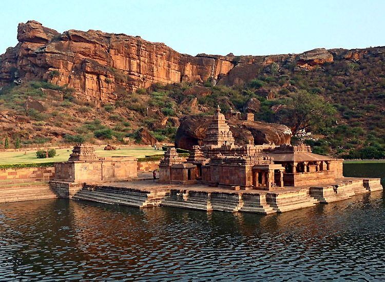Paying tribute to the vast and glorious rule of Chalukyas, next on our list is one of the popular historical monuments in Karnataka. Badami Cave temples in Badami are the epitome of the skill of arts, crafts and architecture.
The four cave temples of Badami were built between the 6th and 7th centuries. The first temple worships Lord Nataraja, while the second and third cave temples to Lord Vishnu and the fourth temple to Lord Mahavira, the founder of Jainism. Though the exteriors are simple, they have fascinating ornate interiors.
There are more than 81 sculptures of Lord Nataraja, ‘the cosmic dancer’, amorous couples, deities of Indian mythology and more. As Badami was the capital of Chalukyas for over 2 centuries, these are enthralling masterpiece
Bahamani tombs
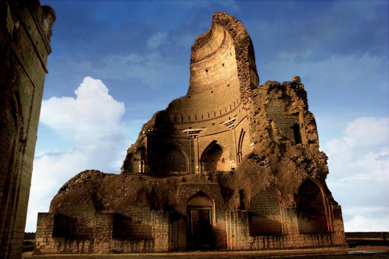Bahamani tombs is a group of 12 tombs located at Ashtur, Bidar. The tombs belong to the twelve Bahamani Sultans. All the mausoleums are beautifully carved and engraved. The tomb of Ahmad Shah Wali, the 9th Bahaman ruler, even has inscriptions of the Quran. One of the striking features of the tomb is that it has a Swastika symbol on the wall. It is one of the most famous tombs among the Bahamani tombs. How to Reach Nearest Airport: Bidar Airport Nearest Railway Station: Bidar Railway Station Nearest Bus Station: Bidar Bus Stand Weather Summers: Max Temperature – 43° C Winters: Min Temperature – 16° C Monsoon: Average Rainfall – 842 mm Best Season to visit: September to December Entry Fee: Varies
Belgaum Fort
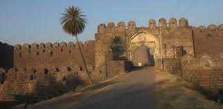Belgaum Fort is a vibrant base of the well-known city of Belgaum and holds an important site as a heritage site in Karnataka that reflects the city’s past history. In the mail transfer, there are two consecrated places, Ganapati and Durga. There are two Italians made in the latest Chalukya style dating to about the year 1204 AD. Besides these two holy houses, one lies in ruins. It is accepted that there were once 108 Jain Temples and 101 Shiva Temples in the castle grounds.
Indeed, even today, we can find stones that form part of these structures. Apart from the sanctuaries of Jain and Shiva, there are two Muslims, mainly the Jamia Masjid and Safa Masjid, also listed within the post. These mosques are subject to Mughal and Deccani styles and have minars, vaults and curves. Apart from the mosques, it is a privilege to enter the underground entrance to promote Yellurgad.
Bidar Fort
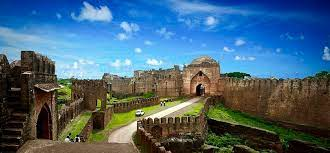Bidar Fort is a historic site in Karnataka. It is used by Adil Shah made of red stones later around the old in 1428 by Ahmed Shah Bahmani. Bidar’s fortification includes various land symbols within its complex, among the most notable being the Rangin Mahal or Painted Palace; the Takht Mahal, or royal chamber; Jami Masjid or Great Mosque and Sola Khamba Masjid or Sixteen-Pillar mosque.
Another unique feature of this castle is the unforgettable water supply framework, called karez. It is basically made up of an organization of underground canals tied up with upside poles. ‘Karez’ has helped to move it through underground passages to various places with people such as drinking, washing, watering pets, and floodplains and so on.
Chennakeshavasvami Temple (Kesava Temple), Hasan
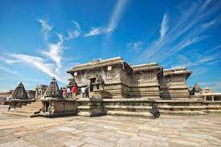
The 12th century Chennakeshavasvami Temple in Hassan is very much
worthy of being of our list best historical sites in Karnataka. Dedicated to Lord Vishnu, the
Hindu temple was built during the Hoysala Empire rule. The temple has mentions in medieval Hindu
texts, and remains an important pilgrimage site in Vaishnavism.
Remarkable for its architecture, sculptures, reliefs, friezes as well its iconography, inscriptions and history, marvel at artwork that recreate scenes of secular life in the 12th century, dancers and musicians, as well as a pictorial narration of Hindu texts such as the Ramayana, the Mahabharata and the Puranas. Though a Vaishnava temple, it includes themes from Shaivism, Shaktism, Jainism and Buddhism. The Chennakeshava temple is a testimony to the artistic, cultural and theological perspectives.
Remarkable for its architecture, sculptures, reliefs, friezes as well its iconography, inscriptions and history, marvel at artwork that recreate scenes of secular life in the 12th century, dancers and musicians, as well as a pictorial narration of Hindu texts such as the Ramayana, the Mahabharata and the Puranas. Though a Vaishnava temple, it includes themes from Shaivism, Shaktism, Jainism and Buddhism. The Chennakeshava temple is a testimony to the artistic, cultural and theological perspectives.
Chaubara
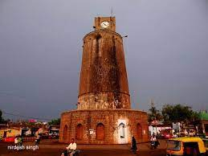
In the center of Bidar is the Chaubara, an ancient clock tower. Chaubara literally means a building
facing four different routes, which is why one can see the planned meeting in the city of Bidar. The
monument is said to have been built before pre-Islamic times but to follow Islamic engineering in an
unusual way.
It has a rounded base and is operated by a black trap with a large clock mounted, which can be reached by a wandering eighty step. The clock tower serves as a point of view and measures 71 meters in length. This tube-shaped structure offers a breathtaking view of the city from the top.
It has a rounded base and is operated by a black trap with a large clock mounted, which can be reached by a wandering eighty step. The clock tower serves as a point of view and measures 71 meters in length. This tube-shaped structure offers a breathtaking view of the city from the top.
Gol Gumbaz

Gol Gumbaz is one of the most important heritage sites in Karnataka. History should be the last
place of
Muhammad Adil Shah (AD 1626-56), the seventh leader of Adil Shahi. Thus it is considered to be the
landmark of Bijapur. Gol Gumbaz is a glorious example of Islamic engineering found in the Deccan
region
directly. The emblem is loaded with the elements of the brand name of the traditional style of
Islamic
or Persian architecture and the most visible object is the tail of the focus. The landmark shows its
magnificent architecture, seven-fold octagonal plaques, curves on the sides, decorative fences,
columns
and a curved arrow to conquer the towers.
Halebidu
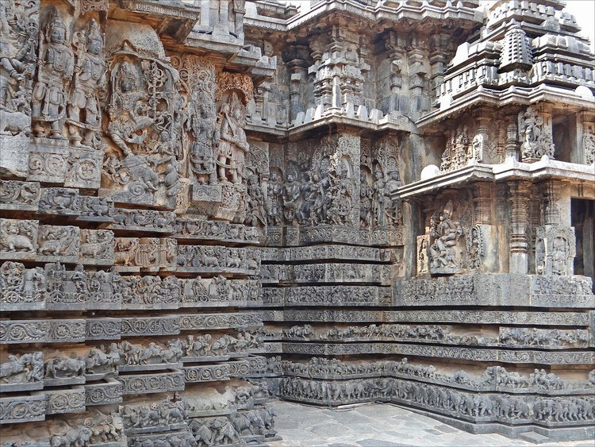Halebidu is an ancient site in the district of Hassan in Karnataka. In the 12th and 13th centuries, Halebidu was the capital of the Hoysala Empire. It is a city full of historic buildings. Most of the monuments are ruins in the present day. Halebidu is famous for the temples built in the Hoysala architecture. The temples and the shrines are carved and engraved with precision. There are intricate details in every sculpture that attracts the attention of the tourists. Hoysaleswara temple, Shantaleswara temple, and Kedareshwara temple are top on the list. Visit Basadi Halli for the Jain temples, Belur, Yagachi Dam, and the Archaeological Museum to complete the trip. How to Reach Nearest Airport: Mangalore Airport Nearest Railway Station: Hassan Railway Station Nearest Bus Station: Halebid Bus Station Weather Summers: Max Temperature- 39° C Winters: Min Temperature- 10°C Monsoon: Average Rainfall- 806 mm Best Season to visit: October to February Entry Fee: Varies from monument to monument
Hampi Group of Monuments

Located on the bank south of the Tungabhadra River, Hampi is a historic town that continues to be a
common tourist destination in North Karnataka and gloves once the seat of the Kingdom of
Vijayanagara.
The city is said to have been built between AD 1336 – 1570. A major development is thought to have been completed during the reign of Raja Krishnadeva Raya, the main leader of the movement.
Today, although Hampi lies in the remains it is still a symbol of rich design and the power of building huge structures. Among the rebuilt buildings in Hampi is the Virupaksha Temple. Spread over 25 sq km there are a lot of cut stone structures where you see what you will be confused about.
The city is said to have been built between AD 1336 – 1570. A major development is thought to have been completed during the reign of Raja Krishnadeva Raya, the main leader of the movement.
Today, although Hampi lies in the remains it is still a symbol of rich design and the power of building huge structures. Among the rebuilt buildings in Hampi is the Virupaksha Temple. Spread over 25 sq km there are a lot of cut stone structures where you see what you will be confused about.
Hassan
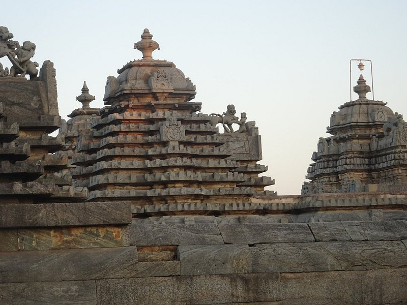Hassan is another site for historical monuments in Karnataka. Like Halebidu, Hassan is home to many Hoysala temples. Hassan received its name from the Goddess Hasanamba. The temple of the goddess is a major attraction in Hassan. There are some Jain temples and a church for touring. The Shettihalli Rosary Church, Bhagawan Bahubali Statue, Sri Lakshmi Venkataramana Swamy Temple, Ishvara Temple, Amaragiri Malekal Tirupati Temple, and Gorur Dam are a few more places to visit in Hassan. Hassan is close to Halebidu and Belur, two other sites one must visit. How to Reach Nearest Airport: Bangalore International Airport Nearest Railway Station: Hassan Railway Station Nearest Bus Station: Hasson Bus Station Weather Summers: Max Temperature- 39° C Winters: Minimum Temperature- 10° C Monsoon: Average Rainfall- 806 mm Best Season to visit: October to March Entry Fee: Varies from monument to monument
Hospet
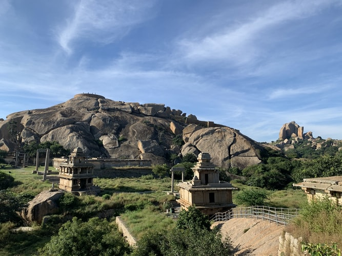Hospet, officially known as Hosapete, is a city in the Bellary district of central Karnataka. It is close to Hampi. The word ‘Hospete’ means a new city. It has historical significance because it was built by Krishna Deva Raya, the king of the Vijayanagara dynasty. Hospet was a dedication by the king to his mother. It was earlier called Nagalapura. The river Tungabhadra flows by the city. Hospet is known as the Fort Town of Karnataka. It is famous for the Chitradurga Fort, also known as the Palace of Stone or “Kallina Kote”. The fort alone contains 19 temples. The city of Hospet is even more popularly known for the Tungabhadra Dam. Other famous attractions in Hospet are Lotus Mahal, Virupaksha Temple, King’s Balance, and Vittala Temple. How to Reach Nearest Airport: Bellary Airport Nearest Railway Station: Hospet Railway Station Nearest Bus Station: Hospet Bus Stand Weather Summers: Max Temperature- 43° C Winters: Min Temperature- 15° C Monsoon: Average Rainfall- 654 mm Ticket Price: Varies from monument to monument
Hoysaleswara Temple, Halibedu
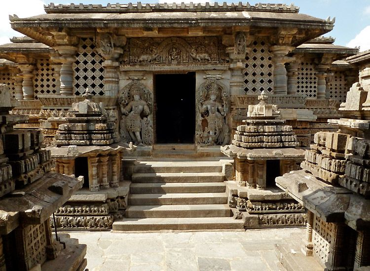
Wouldn’t you love a journey back into history? The 12th century capital of the Hoysala Empire,
Halebidu does just that. Home to a number of heritage monuments in Karnataka, the city is truly
fascinating in every way. Fining its mention on our list is, one of the finest examples of Hoysala
architecture, Hoysaleswara Temple. In fact the temple is acclaimed as ‘the supreme climax of Indian
architceture’.
Dedicated to Lord Shiva, the incredible Dravidian temple is known for carvings and sculptures that
bring to life the mythological deities of Indian culture. The metal like polishing must be seen to
believe how even stones can be greatest of treasures. Pay a visit to take blessings of the Lord but
definitely to pay homage to the craftsmanship of the temple artisans.
Kedareshwara
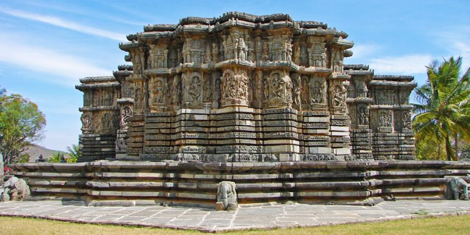
Kedareshwar temple is in Halebeedu, Hassan district of Karnataka. Hoysala King Veera Ballala II
built the temple during his rule (1173-1220 A.D.). The Archaeological Survey of India has marked the
temple as a monument of national importance.
Although the Kedareshwar temple is a dedication to Lord Shiva, it is also a Trikuta temple. Trikuta
refers to the shrine of three major deities in India – Lord Vishnu, Shiva, and Brahma. The temple
walls are full of sculptures of holy figures that depict religious stories of Ramayana, Mahabharata,
and Bhagavad Gita.
Every nook and corner of the temple holds a character from the Hindu scriptures. The pillars towards
the entrance are star-shaped and make one wonder about the technology used in that era. Kedareshwara
temple is a window to our religious and cultural past.
How to Reach
Nearest Airport: Bangalore International Airport
Nearest Railway Station: Hassan Railway Station
Nearest Bus Station: Hassan Bus Station
Weather
Summers: Max Temperature- 39° C
Winters: Minimum Temperature- 10° C
Monsoon: Average Rainfall- 806 mm
Best Season to visit: October to March
Opening Hours 8.00 AM – 5.00 PM
Entry Fee: Not ticketed
Mysore Palace, Mysore

When talking about the historical monuments of Karnataka, it is impossible to not mention the
spectacular Mysore Palace. The royal official residence and seat of the Wodeyars (1399 to 1950), the
palace is one of the most famous places to see in Mysore, Karnataka.
The magnificent palace has an Indo-Saracenic layout with blend of Hindu, Islamic and Gothic
architectural styles. Standing three-storey tall amid sprawling gardens, the palatial building
overlooks the scenic Chamundi Hills. A visit to Mysore Place, introduces you to the historic tales,
the lavish way of living, and the royal memorabilia making it an unmissable delight of South India.
Plan a visit to Mysore Palace during Dusshera. The 10-day festival is an extravagant celebration,
where the palace is decked in its optimum beauty.
Srirangapatna
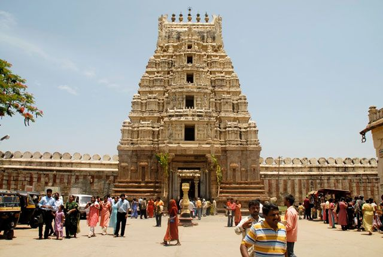Srirangapatna is one of the top ancient sites in Karnataka. UNESCO even nominated the town as a world heritage site. It is an island town located by the river Kaveri giving it scenic beauty. The town of Srirangapatna boasts the architectural style of the Vijayanagar and Hoysala dynasties. Srirangapatna receives its name from the famous Ranganathaswamy Temple dedicated to Lord Vishnu. The Ranganathaswamy Temple is a magnificent temple that beholds the gaze of the tourists. Kunti Betta hill, Balmuri, and Edmuri waterfalls are must-see spots. The town is host to numerous historical monuments and sites like Daria Daulat Bagh, Srirangapatna Fort, Gumbaz of Tipu Sultan, Jama Masjid, Ranganathittu Bird Sanctuary, and much more How to Reach Nearest Airport: Mysore Airport and Bengaluru International Airport Nearest Train Station: Mysore Train Station Nearest Bus Station: Central Bus Stand in Mysore, and Kempegowda Bus Stand in Bengaluru Weather Summers: Max Temperature- 37° C Winters: Min Temperature- 15° C Best Season to visit: October to March Entry Fee: Varies from monument to monument
Statue of Gomateshwara, Shravanabelagola
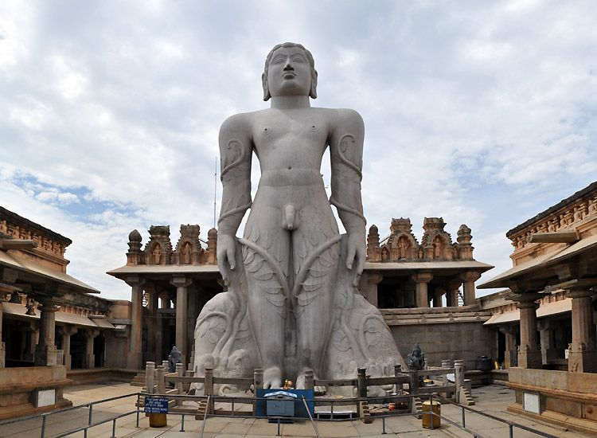
Awe-inspiring history of Karnataka brings us our next popular attraction, the 57-feet statue of
Gomateshwara, also known as Bahubali. Known among the must see historical monuments in Karnataka,
the massive statue is one of the largest free-standing statues in the world. Even more inspiring is,
the one in 12 years’ ritual where the lord is bathed in milk, saffron, turmeric and other holy
things.
Dating to the year 981, built during the rule of Ganga dynasty, the massive statue is a vision and
till date inspires awe. Visit Shravanabelagola for it is an important Jain pilgrimage site in India,
one of the unmissable highlights of Karnataka heritage tours.